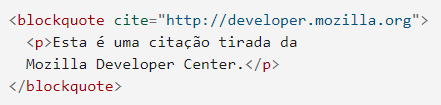

A seguir, veremos a utilidade de algumas tags do html.
Representa uma parte do texto que foi excluída de um documento. Esse fragmento é, geralmente, renderizado pelos navegadores com uma linha "cortando" o texto.
O código implementado ficará assim:
This text has been deleted
É utilizado para quando um texto foi inserido ao documento.
Código implementado:
Esse texto foi adicionado.A tag indica que o texto incluído é uma longa citação. Usualmente, é apresentado como um recuo no texto. A URL para a fonte da citação pode ser dada usando o atributo cite, enquanto uma representação de texto da fonte pode ser dada usando a tag <cite> elemento.

O código implementado ficaria:
Esta é uma citação tirada da Mozilla Developer Center.
O elemento HTML <q> indica que o texto dentro da tag é uma pequena citação. Este elemento destina-se a citações curtas que não requerem marcações de parágrafo.
Além de incluir os atributos globais, ele possui o cite, que tem como valor um URL, o qual encaminhará para a fonte da informação citada.
Para mais informações clique aqui.
Essa tag irá representar uma abreviação e opcionalmente fornece uma descrição completa para ela. Se presente, o atributo title deve conter a descrição completa.
O resultado desse código seria: Obama é presidente dos EUA.
Ela fornece informações de contato para seu ancestral <article> ou <body> mais próximo; no segundo caso, ele se aplica ao documento inteiro.
O seguinte conteúdo está expresso entre as tags "address":
Voce pode contatar o autor em www.somedomain.com.
Além de sua função semântica, ele deixa o texto como se esse estivesse entre <i>.
O elemento HTML <cite> representa uma referência a um trabalho artístico. Deve incluir o título do trabalho ou uma URL de referência, que pode ser em uma forma abreviada de acordo com as convenções usadas para a adição dos metadados de citação.
O resultado do código escrito acima seria: Mais informações podem ser encontradas em [ISO-0000].
O elemento HTML <bdo> (bidirectional override) é utilizado para substituir a direcionalidade atual do texto. Isso fará com que a direção do texto se torne aquela que foi especificada no código.
ltr: com esse, o texto ficará da esquerda para a direita (Left-To-Right), como o usual.
rtl: o texto ficará da direita para a esquerda (Right-To-Left).
Código implementado:
Este texto ficará da esquerda para a direita.
Este texto ficará da direita para a esquerda.
Essa tag define um fragmento de código de computador no documento HTML. Os navegadores tradicionalmente renderizam o texto encontrado na tag <code> em fonte monoespaçada.
Código implementado:
Computer code goes here
HTML texto preformatado <pre> é a tag utilizada para representar um texto pré-formatado. O texto dentro desse elemento é exibido da mesma maneira em que o texto original. Ele geralmente fica desproporcional ao restante do conteúdo e os espaços em branco são mantidos no texto, assim como ele foi digitado.